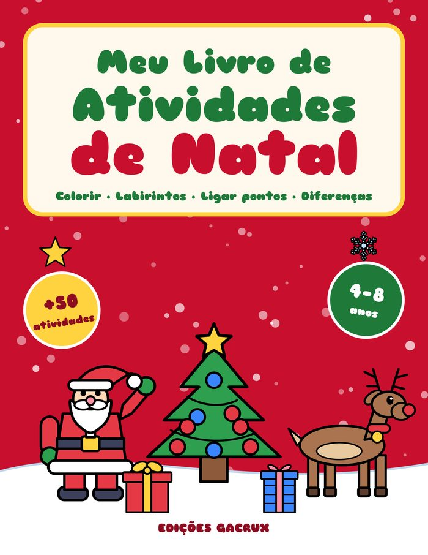
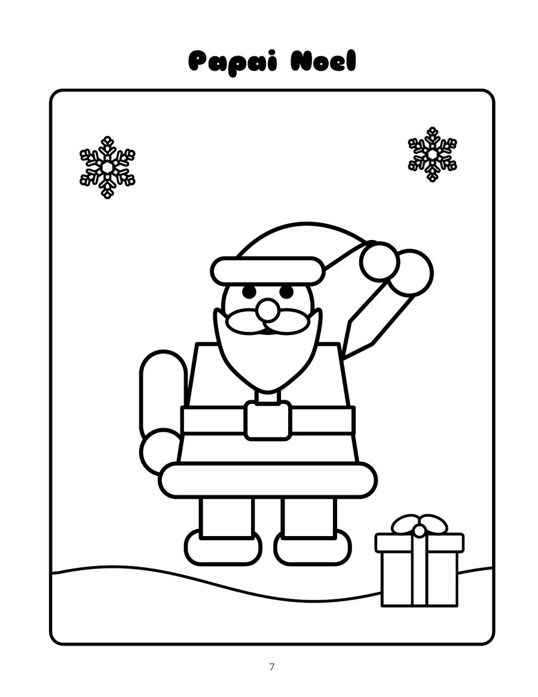
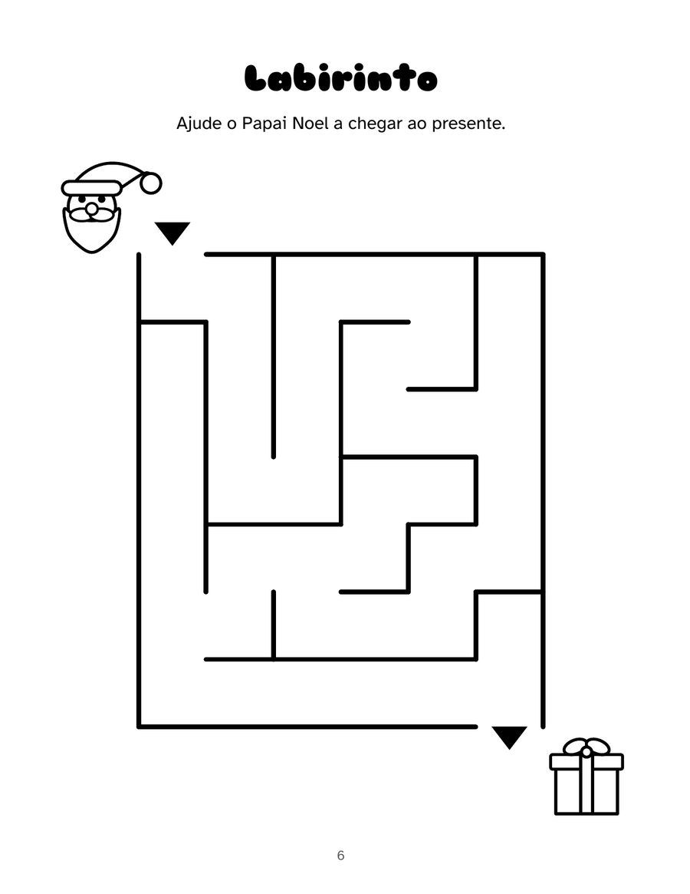
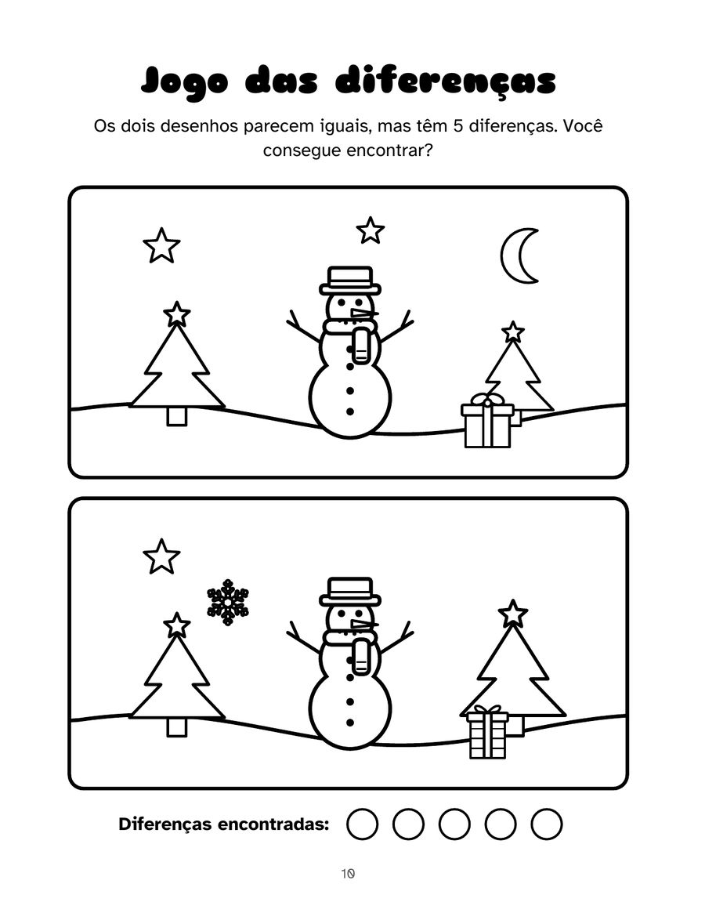

Português (Brasil)
Meu Livro de Atividades de Natal
Para crianças de 4 a 8 anos
Mais de 50 brincadeiras e desenhos para colorir de Natal em um só livro, tudo em português do Brasil. Traço grosso e áreas grandes, feitos para mãos pequenas: diversão longe das telas nas férias.
PDF com 4 páginas do livro, pronto para imprimir. Amostras grátis para uso pessoal e em sala de aula.
64 páginas · 21,6 × 27,9 cm · brochura · Edições Gacrux
O que tem no livro
- 26 desenhos para colorir: a árvore, o Papai Noel, a rena, o boneco de neve, o Papai Noel na praia e mais
- 6 labirintos e 6 desenhos de ligar pontos
- 4 jogos das diferenças e 4 caça-palavras fáceis
- Sombras, contar e cobrir o tracejado
- Carta ao Papai Noel, lista de desejos e certificado
- Respostas no fim do livro
Veja por dentro
Toque em uma página para ver maior.





